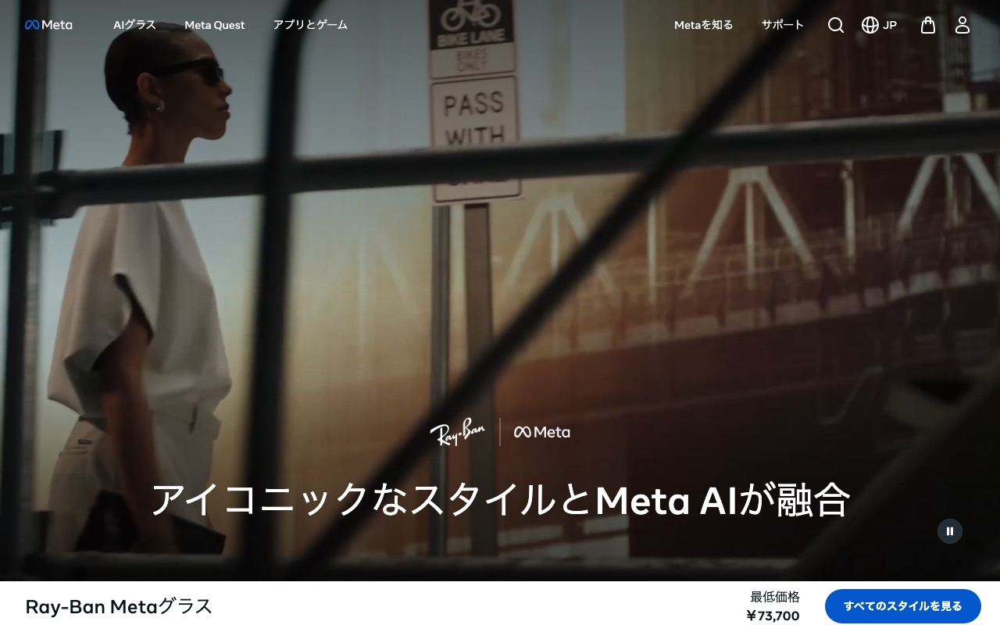
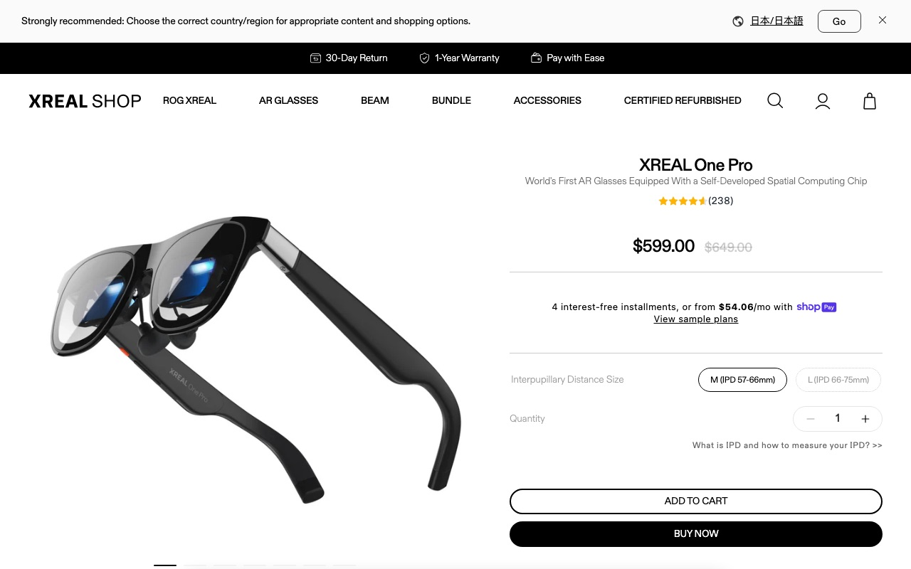
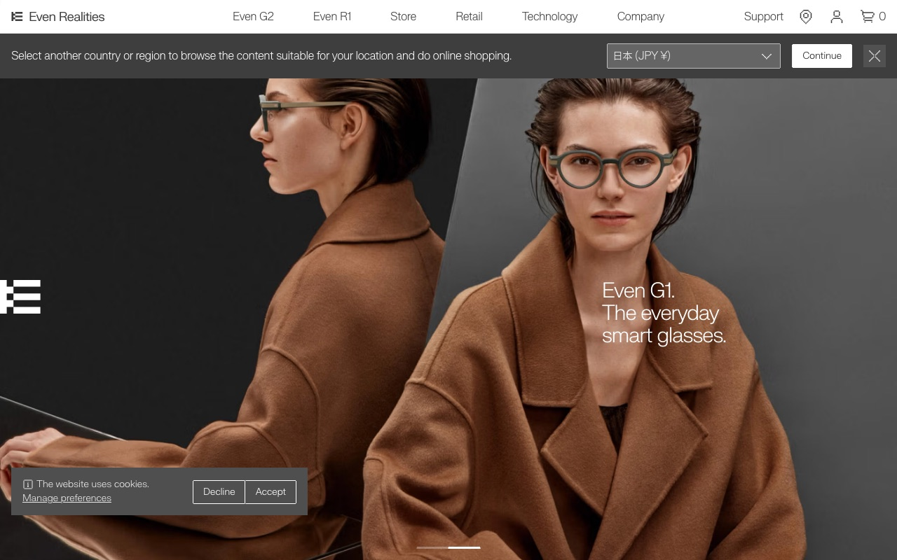
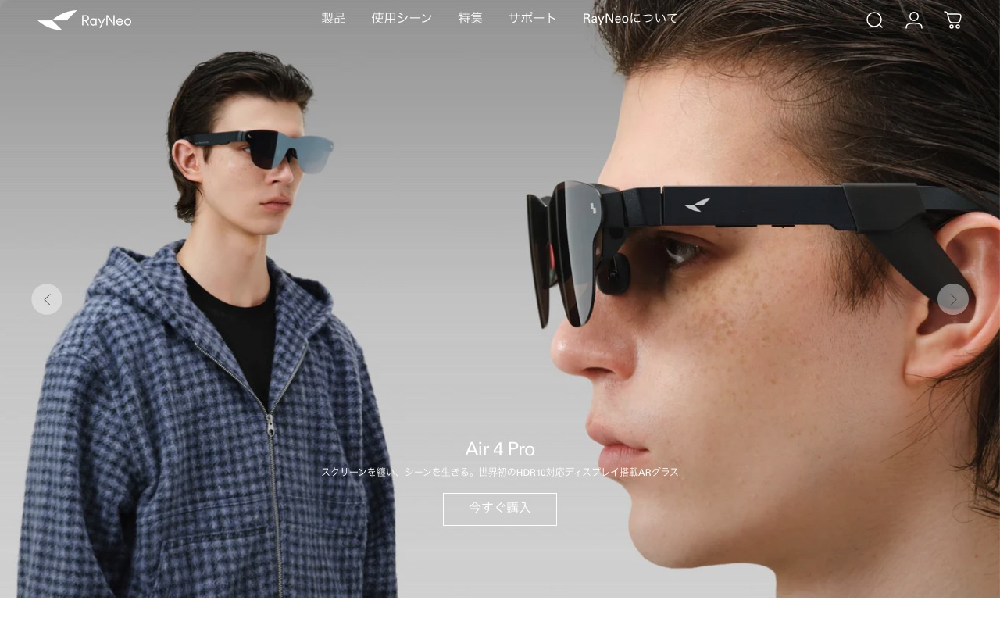

2025 年 AI 眼镜突然火了。它分几类、谁在卖、技术差在哪、值不值得买?一张看得懂的全球全景图。
说明 中立行业地图,结论来自公开多源交叉验证(112 个 AI agent 协作、对抗式核查),不替任何品牌站台。份额数字口径不同差异大,看趋势别抠绝对值。这行业半年一变,名单会旧。配图为各品牌官网真实截图。
不是炒概念,是真出货了。但"爆"的是其中一类,不是全部。
2025 下半年,全球智能眼镜出货同比 +139%。全年卖了约 725 万台,头一次占到整个 XR(扩展现实,VR/AR 那一摊)市场的一半。但有个反差:卖爆的几乎全是"带摄像头的 AI 眼镜"(像 Ray-Ban Meta),而大家最期待的"带显示屏的 AR 眼镜"其实还很小众——截至 2026 年,中国市场没有一款带屏 AR 眼镜单品出货破 50 万台。整体是"热度高、销量低"的早期阶段。
最简单的分法:看它有没有摄像头、有没有屏幕。这是 IDC、Counterpoint 这些机构的标准分法。
| 这一类 | 有啥 | 干啥用 | 代表 | 现状 |
|---|---|---|---|---|
| ① 纯音频眼镜 | 只有喇叭,无摄像头无屏 | 听歌、接电话、语音助手 | 各家入门款 | 基础 |
| ② 摄像头+AI助手 | 有摄像头,无屏 | 拍照录像、AI 看世界、翻译、问答 | Ray-Ban Meta | 最大最火 |
| ③ 带显示的 AR/HUD | 有屏(眼前能显示信息) | 看导航、看字幕、看翻译、投屏看片 | XREAL · 雷鸟 · Even G1 | 小众早期 |
四款各代表一种打法:无屏 AI、大屏看片、轻量 HUD、全彩 AR。
长得就是副雷朋墨镜,但能拍照、能跟 AI 说话问它"我看到的是啥"。无屏。
第②类(摄像头+AI)的标杆,2025 年全球卖爆的就是它。$299 起,价格亲民是它能卖爆的关键。

镜框角上有个 1200 万像素摄像头,能拍 3K 视频。说一句 "Hey Meta" 唤醒 AI(用 Llama 4 模型),它能描述你眼前的东西、念出看到的文字、报路。要连手机 App 用,续航约 8 小时。
戴上像眼前挂了块大屏幕,主要拿来看片、打游戏、当电脑外接屏。
第③类里走"大屏观影"路线,用的是 Birdbath 光学(成像清楚但镜片偏暗、透光率低)。57 度视场角是消费 AR 里最大的之一。

索尼 Micro-OLED 屏,1080p、120Hz、600 尼特。新款棱镜比老款薄 44%。多数要插手机/电脑/游戏机当画面源(它本身偏"显示器",不是独立电脑)。
看着就是副普通近视眼镜,但镜片里能浮出一行绿色字——导航、翻译、提词。无摄像头。
第③类里走"轻量 HUD"路线,用 光波导(镜片透亮、像真眼镜)。$599 起(带近视片 $749-799),约是 Ray-Ban Meta 的两倍。主打日常隐形佩戴。

Micro-LED 投影 + 光波导,显示 640×200 的绿色单色字,浮在你前方 1-5 米。能实时翻译(说英文,译文蹦到眼前)、导航、记笔记。续航约 1.5 天,但直射阳光下看不清。
中国厂商的全彩 AR 旗舰,想做"戴在脸上的安卓手机"。
第③类里冲"全彩一体式"——不靠外接,自己能跑 App。用全彩刻蚀光波导 + Micro-LED(和 Applied Materials 合研,号称减 95% 彩虹纹)。8999 元起(国补后 7649),高端档。

骁龙 AR1 平台,自研萤火虫全彩 Micro-LED 光引擎(峰值 6000 尼特)。能跑安卓 App(抖音/Instagram/WhatsApp),支持 Apple Watch 手势、语音、手机遥控操作 3D 空间界面。
两个核心:芯片(谁来算)、光学(屏幕怎么塞进镜片)。
芯片:几乎都是高通
无屏 AI 眼镜这一类,芯片基本被高通 骁龙 AR1 平台垄断——Ray-Ban Meta 用的就是它。新款 AR1+ 更小更省电,而且能在眼镜上本地跑一个小 AI 模型(Llama 1B,不用联网、不依赖云)。这是个方向性转变:AI 从"靠云端"往"装进眼镜里"走。(注:本地小模型是厂商现场演示,没有独立性能实测;高通也承认它质量比云端大模型差)
光学:Birdbath vs 光波导,各有死穴
| 光学方案 | 镜片透不透亮 | 优点 | 死穴 | 谁在用 |
|---|---|---|---|---|
| Birdbath | 暗(15-25%) | 成像清楚、便宜、视场大 | 镜片偏墨镜,不像日常眼镜 | XREAL |
| 光波导 waveguide | 透亮(>85%) | 像真眼镜、能日常戴 | 贵、画质和成本难两全 | Even G1 / 雷鸟 |
技术天花板很高,但能买到的产品还差得远。
技术天花板是 Meta 的 Orion(2024 年展示):70 度视场、全彩、效果惊艳。但单台造价约 1 万美元、续航才 2 小时、要配一个神经手环 + 一个无线计算盒三件套,只造了约 1000 台给内部演示,根本不卖。
具体看:Even G1 能配近视、续航 1.5 天,但大太阳下看不清;XREAL One Pro 才 700 尼特、要外挂近视片、还得插主机;雷鸟想做全彩一体但价格 8999 起。各有各的妥协。
老实说:哪些说法被我们查掉了,哪些没查到。
查掉了 · 没采信
两条互相矛盾的份额数据都没能交叉验证(一条三票全否),纯 AR 显示子类的厂商排名证据不足,不敢写
三票全否,芯片线和产品分类不是一一对应,不能这么说
没查到 · 待补
XREAL、雷鸟、Viture、Rokid 各占多少,证据相互打架,缺可信一手数据
具体出货量、用什么芯片和光学方案,这几家覆盖很薄
工业、医疗、物流这些专业场景的 AI 眼镜,这轮几乎没覆盖
现有证据多是出货量(多少台),缺权威的营收金额和长期增长率预测
结论都能往回查。
Counterpoint ResearchIDCCNBC36kr
qualcomm.commeta.com / about.fb.comevenrealities.comshop.xreal.comrayneo.com
Tom's Guidevirtual.reality.newstreeview.studio